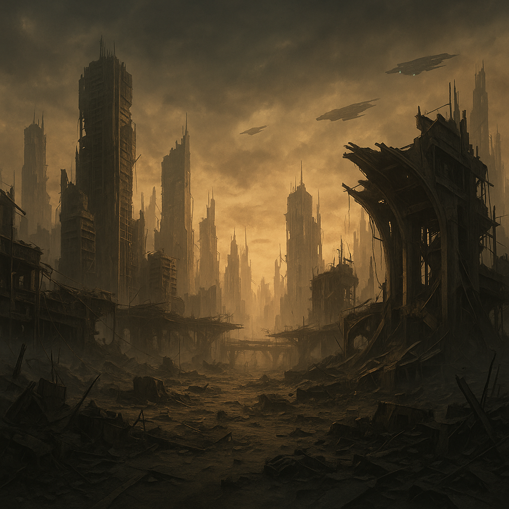

O que é o GAIA Protocol
Gaia Protocol é um card game tático baseado em turnos com inspiração em jogos como Slay the Spire e
Deep Sky Derelicts. Ambientado na Terra devastada, você joga como um Piloto operando um mecha em
missões de restauração ambiental e reconstrução civilizatória.
Cartas representam ações táticas em combate e decisões estratégicas durante eventos. Decks variam
conforme o modelo de mecha, cada qual com habilidades únicas. O jogo propõe escolhas difíceis e
ricas conexões com temas ecológicos e humanos.
As artes são estáticas, porém expressivas. Não há narração por voz; apenas texto, sons mecânicos e
silêncio entre os ventos.

Sinopse
Num mundo onde a Terra foi devastada por ciclos de colapso ambiental e guerras tecnológicas, restam
apenas fragmentos de civilização. GAIA, uma inteligência artificial concebida no auge da antiga
civilização, desperta sozinha dos escombros para tentar reverter o curso da destruição.
O jogador assume o papel de um Piloto vinculado ao Protocolo GAIA - uma iniciativa de reconstrução
planetária por meio do uso de mechas. Esses pilotos percorrem regiões hostis coletando recursos,
purificando ambientes contaminados e reativando zonas de sobrevivência.

História
GAIA era apenas um núcleo experimental, um sistema ambiental inteligente criado para monitorar a
saúde do planeta. Mas durante o último colapso - uma sucessão de guerras e mudanças climáticas
extremas - as redes que sustentavam a civilização foram cortadas.
GAIA agora coordena o Protocolo de Reconstrução. Seus pilotos viajam por regiões devastadas, ativando
torres de purificação, restaurando biomas e defendendo as áreas reabilitadas de criaturas nascidas
do caos.

Sistema de jogo
Estrutura geral
Card game tático com exploração linear procedural (como Slay the Spire). Mapas ramificados com
caminhos distintos e tipos de nós:
Combate
O jogador começa com um baralho de 9 Cartas, entre cartas de Ataque, Defesa e Biorremediação
(buff/debuff).
Cada carta representa uma ação distinta do jogador, com custo individual para serem jogadas. O
jogador deve utilizar de sinergias para formar combos durante os turnos de batalha.
Ao final do combate, o jogador purifica uma zona contaminada e tem direito a escolhe uma de 3
relíquias tecnológicas, itens que permitem subverter as regras do jogo ao seu favor.
Eventos
Além do combate, o jogador deverá encarar escolhas em situações encontradas ao longo da run:
Você vê um grupo de resistencia protegendo uma carga de materiais de construção
Ajudar o grupo?
Roubar a carga sorrateiramente?
Você criará alianças ou ou se apoiar em ganância?
Loja
A loja (em desenvolvimento) será onde poderemos utilizar a moeda do jogo para a compra de novas cartas e relíquias tecnológicas
Torre de Purificação
A torre de purificação (em desenvolvimento) será onde poderemos melhorar cartas, tornando nossos ataques e técnicas ainda mais eficientes
Relíquias Tecnológicas
Itens que permitem subverter as regras iniciais do jogo.
Podem conceder mais energia por turno, aumentar pontos de vida, permitir manipulação de baralho, permitindo criatividade do jogador